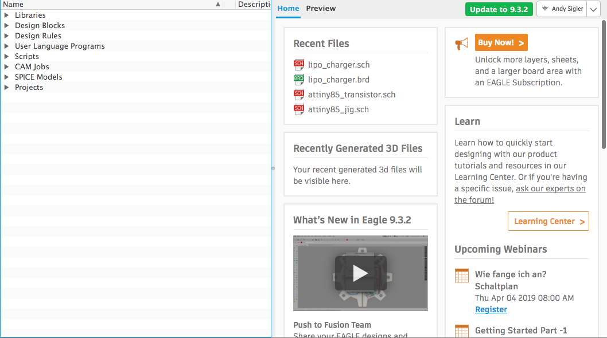
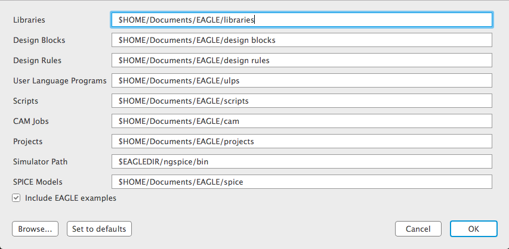
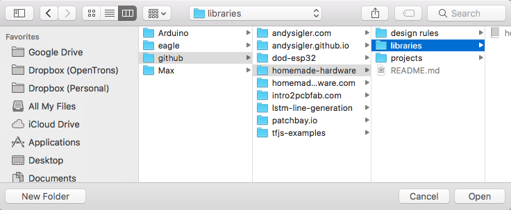
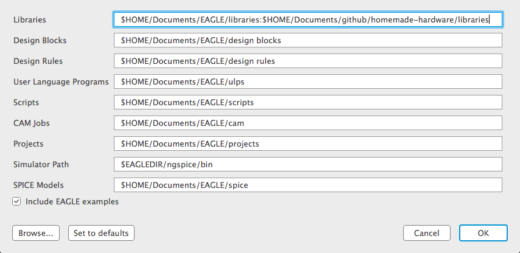
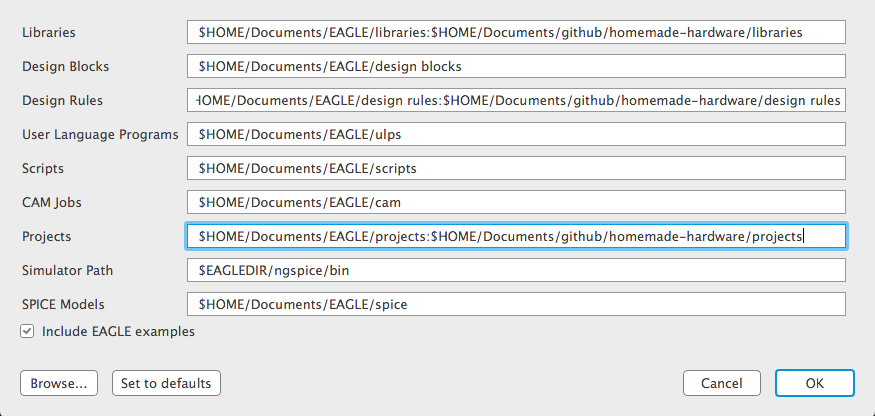
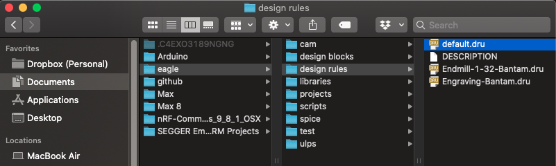
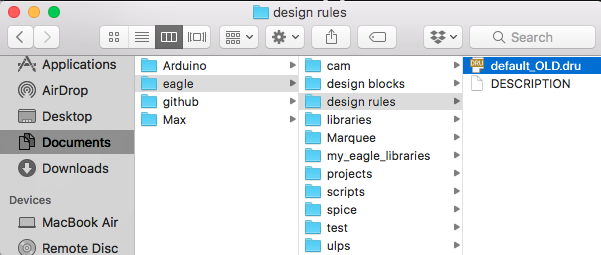
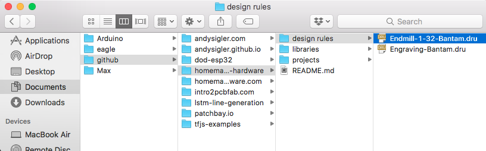
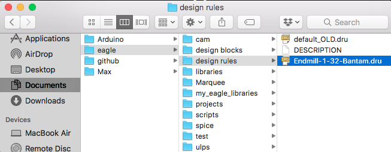
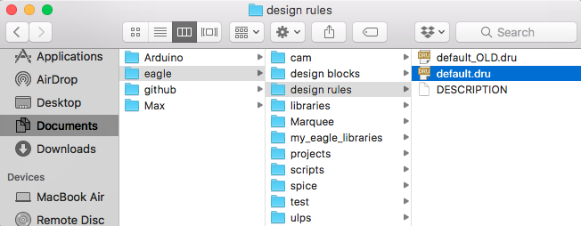

This guide goes through Eagle download, install, and configuration with the Homemade Hardware repository.
Before you get started, make sure you have downloaded the Homemade Hardware github repository. It contains examples, a parts library, and DRC files.
If you use git, you can instead clone the repository:
gits clone https://github.com/andySigler/homemade-hardware.git
After first installing Eagle, you'll want to link the homemade-hardware repository you downloaded. If we do this, then Eagle will be able to see the parts library, as well as everything else in the repo.
Open Eagle, and you will see the Eagle Control Panel. If you close this window, Eagle will quit.
I honestly don't use the Control Panel for anything, so feel free to hide the entire window from sight (minimize it).
At the top menu, go to Options -> Directories..., and a window will open. This window is where we want to add the file location of the homemade-hardware repository you downloaded.
With the Libraries section selected, click the Browse... button. Go to the homemade-hardware folder, select the "libraries" folder, and click "Open".
Now, the file path to your homemade-hardware/libraries folder has been added to the list of Libraries directories.
Do the same for the design rules and projects folders. When you are done, your Directories window should look like below:
There are some default settings Eagle uses when you draw routes (traces). Before we start designing, let's change these defaults so our boards can be made on a Bantam milling machine.
Take a look at the Directories page described in the above section. You should see the section named "Design Rules".
Notice the name of the default folder (created by Eagle) to store it's default "Design Rules". On my computer, the folder location is /Users/andy/Documents/eagle/design rules.
Go to this location on your computer, and you will find a file named default.dru.
Rename that file so it's called "default_OLD.dru" or something like that. So you know it's old, but you're not deleting it.
Go to the Homemade Hardware repo folder, go to the design rules section, and you'll find a file named Endmill-1-32-Bantam.dru
Now COPY this file over to Eagle's "design rules" folder.
Rename the file you just copied, naming it default.dru
If you have Eagle open, restart it.
{kind=link}
{kind=link}
{kind=link}
{kind=link}
{kind=link}
{kind=link}
{kind=link}
{kind=link}
{kind=link}
{kind=link}